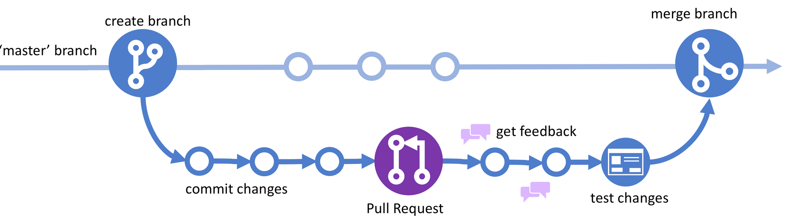
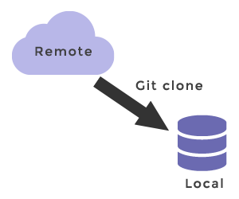
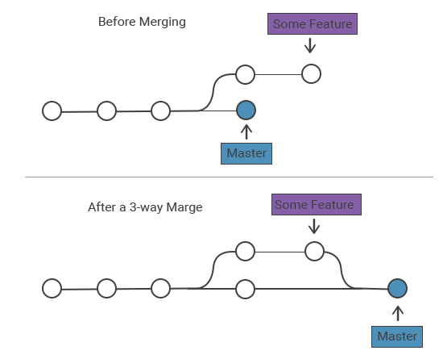
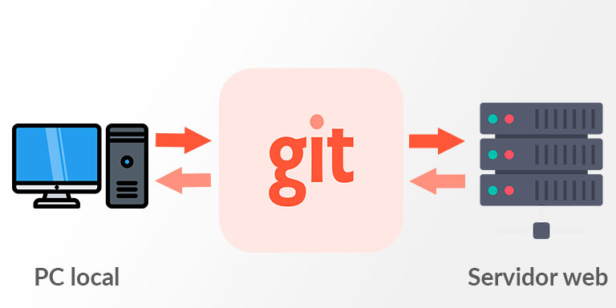
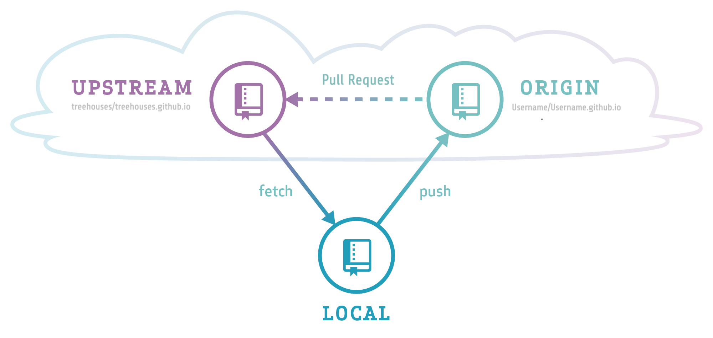

Al hablar sobre Github, podemos llegar a la idea de que los repositorios son uno de los componentes mas importantes a tomar en cuenta, ya que en estos se basa el uso de esta aplicación. De forma general, un repositorio es el elemento más básico de Github. Es un lugar donde se puede almacenar código, archivos e historial de revisiones de cada archivo. Los repositorios pueden contar con múltiples colaboradores y pueden ser públicos o privados.
Acciones con los repositorios
Para empezar con la creación y entendimiento de los repositorios, es importante conocer cierta terminología que nos ayuda y enseña que acciones somos capaces de hacer con aquellos repositorios que realizemos. Algunos de estos términos importantes son:
-
Branch
Versión paralela del código contenido en el repositorio, pero que no afecta a la rama principal. 
-
Clonar
Hace referencia a descargar una copia completa de los datos de un repositorio de Github, incluidas todas las versiones de cada archivo y carpeta. 
-
Bifurcar
Un repositorio nuevo que comparte configuración de visibilidad y código con un repositorio "ascendente" original.

-
Merge
Para aplicar los cambios de una rama y en otra. 
-
Pull request
Una solicitud para combinar los cambios de una rama en otra.

-
Remoto
Un repositorio almacenado en Github, no en el equipo. 
-
Upstream
La rama de un repositorio original que se ha bifurcado o clonado. Aquella rama bifurcada o clonada se denomina descendente. 
Colaboración en los repositorios
Como ya se menciono, los repositorios se pueden utilizar para administrar nuestro trabajo y colaborar con otros. Las distintas opciones de Github tambien complementan este trabajo grupal de distintas formas. Los "problemas" sirven para recopilar comentarios, informar errores y organizar las tareas a realizar. Los foros sirven para hacer y responder preguntas. Las pull request sirven para proponer cambios en un repositorio. Existen más formas de complementar el trabajo en equipo gracias a Github, las ya mencionadas solo son algunas de ellas y también son de las mas importantes.